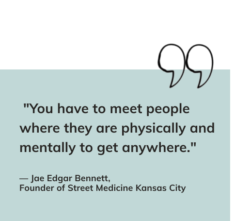
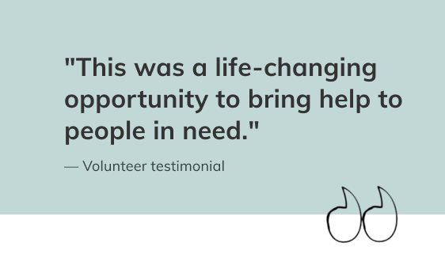
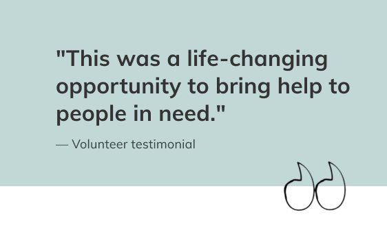

Those experiencing homelessness are more exposed to chronic illness, injuries, suicidal ideation and violence than others.

Every night more than 2,000 people in the Greater Kansas City area sleep on the streets, in their cars, or in homeless encampments.

An estimate 8,471 public school students experienced homelessness in recent years

The average life expectancy of a U.S. citizen is 79 years old, but for a person experiencing homelessness that number drops to just 47 years old
We welcome doctors, nurses, medical students, social workers, and volunteers to join us for profound and impactful work that can save lives
Businesses in the Kansas City area have the opportunity to bring real change to the community and positively affect the lives of those who are most vulnerable by partnering with us
 

Inspired by the need for local humanitarian medical assistance for those experiencing homelessness in the Kansas City area, Street Medicine Kansas City (SMKC) was founded as a 501(c)(3) nonprofit organization in 2016 by Jae Bennett, who acted as Executive Director.
Our staff has designed a delivery system tailored to meet the specific needs of our patients and clients. We work in interdisciplinary teams made up of primary care providers, behavioral health specialists, and social workers. We travel to wherever our patients in need are located - whether it be a free clinic at our community center or to a riverside encampment that requires hiking in with a backpack full of medical supplies (we call this "Backpack Medicine").

Jae Edgar Bennett, the founder and driving force behind SMKC, was a beacon of light for the homeless population in the Kansas City area. Having experienced homlessness himself, he became a passionate advocate for bringing personalized and dignified holistic medical care to the most vulnerable
We're a team of doctors, pharmacists, nurses and social workers inspired by Jae's legacy to help those in need in Kansas City

Our 8th Street Community Center is the heart of all of our operations and the headquarters of SMKC. Access to social workers, medical and mental health assistance are available year-round. During winter months, we're open daily as a warming shelter to anyone in need.
If you or someone you know needs help, please reach out. We're here to help, no questions asked!

1444 E 8th Street
Kansas City, MO 64106
Daily, 10:00 am - 3:00 pm

"'Likely a Death Sentence': Officials Fear Cold Weather Is Greater Risk for Homeless Than Virus"
2/14/2021

"KC homeless community in dire need of warmth as bitter cold lingers. Here's how to help"
2/11/2021